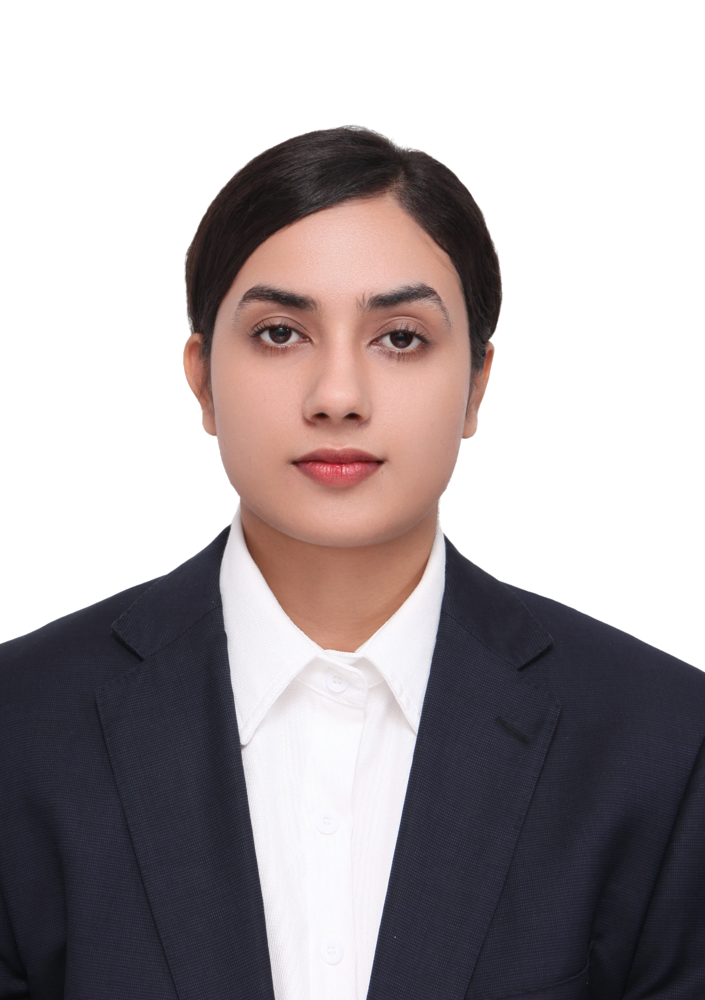

Graduate Researcher in Biomedical AI · Southeast University, Nanjing
I am a graduate researcher in Biomedical AI at Southeast University, China, with an interdisciplinary background in engineering, medical imaging, and clinical healthcare. My research interests include artificial intelligence for healthcare, biomedical signal and image analysis, multimodal learning and data fusion, wearable and intelligent monitoring technologies, and computer-aided clinical decision support. My goal is to develop clinically meaningful AI solutions for healthcare.
Focus Areas
My research combines clinical biomedical expertise with AI-driven signal processing, spanning wearable physiological sensing, multimodal data fusion, and intelligent healthcare systems. With a grounding in real clinical environments and hands-on experience with diagnostic imaging, I am interested in developing systems that are practical, interpretable, and directly applicable to patient care across a range of clinical domains.
Selected Works
Privacy-Preserving Federated Learning for Multimodal Depression Detection Using Wearable EEG, ECG, and Clinical Speech
Biomedical Signal Processing and Control
Rest-Task-Delta Physiological Reactivity for Depression Detection Using Wearable EEG, ECG, and Respiration
IEEE BSN 2026 · Body Sensor Networks Conference, Porto
VR-GAF EEG-Speech Fusion for Depression Detection
ICBIP 2026 · International Conference on Biomedical Imaging and Processing, Shanghai
Role of Early Arterial Phase Imaging in Accurately Differentiating Hepatocellular Carcinoma from Dysplastic Nodules
Journal of Medical & Health Sciences Review · 2025
DOI: 10.62019/xxh17e83
Clinical Relevance and Diagnostic Value of Somatostatin Receptor Scintigraphy in Neuroendocrine and Inflammatory Disorders
Turk Fizyoterapi ve Rehabilitasyon Dergisi · RASCON 2026 · Conference Abstract
Professional Background
MSc Researcher
SHE Wearable Intelligent Monitoring Laboratory · Southeast University, Nanjing
Developing multimodal physiological signal processing frameworks integrating EEG, ECG-derived HRV, speech, and respiration signals for clinical AI applications. Contributing to the preparation of centralized AI models for future deployment in wearable monitoring systems through collaboration with Goertek and Lenovo. Conducting clinical data collection at Nanjing Brain Hospital under the supervision of Prof. Chengyu Liu and Dr. Lulu Zhao.
Medical Imaging Technologist
Al-Khidmat Diagnostic Center · Multan, Pakistan
Operated diagnostic imaging equipment including CT, MRI, Mammography, X-ray, and ECG across a diverse patient population. Assisted radiologists in clinical imaging procedures and maintained diagnostic quality and equipment safety standards.
Academic Background
Master's Degree in Electronic and Information Engineering
Southeast University, Nanjing, China
GPA 3.87 / 4.0
MS Allied Health Sciences (Medical Imaging Technology)
Superior University Lahore, Pakistan
GPA 3.77 / 4.0
BSc Radiography and Imaging Technology
Government College University Faisalabad (GCUF)
CGPA 3.73 / 4.0
Recognition
SEU President Scholarship
Southeast University, Nanjing, China
Cultural Star Award
Provincial Level, Jiangsu Province · SEU Art Troupe
Outstanding International Student Representative
National-Level Forum, UESTC, Chengdu
PEEF Merit-Based Scholarship
Punjab Educational Endowment Fund, Pakistan · Undergraduate
Get in Touch
I welcome correspondence regarding research collaboration, PhD opportunities, and academic exchange. I am actively seeking fully funded PhD positions commencing 2027 in biomedical AI, signal processing, and related fields.